Reprogramação de tratores e máquinas agrícolas com até 20% mais potência e torque cheio já nas baixas rotações — sem abrir o motor, sem trocar peças. Tecnologia de pista dentro do campo.
A dor do produtor
Diesel, mão de obra, insumos — tudo aumentou. A margem por saca vem diminuindo. A máquina que travava o custo precisa trabalhar com mais eficiência por hora operada.
Financiar uma máquina nova com os juros atuais compromete o fluxo de caixa da safra. O trator que você tem ainda tem estrutura — falta potencial de software que ninguém explorou.
Máquina com potência abaixo do ideal atrasa operação, aumenta hora-máquina e comprime a janela. Um dia perdido no plantio tem custo real na produtividade final.
Tratores saem de fábrica com mapas conservadores para diferentes mercados e combustíveis. Esse mapa padrão não foi calibrado para a sua operação, sua altitude, sua lavoura.
Como funciona
Leitura completa da ECU, mapeamento de parâmetros atuais de potência, torque, injeção e turbo. Identificamos exatamente onde está o potencial represado.
Ajuste preciso dos parâmetros de injeção, pressão de turbo e curva de torque para o perfil da sua operação. Tudo via software — sem abrir o motor, sem trocar peças.
Leitura pós-reprogramação em tempo real — os ganhos de potência e torque são identificados na hora, comparando antes e depois com o produtor presente. Máquina pronta para o campo no mesmo dia, resultado já comprovado.
O que você ganha
Torque disponível a partir de rotações mais baixas — menos patinagem, menos desgaste de pneu, mais tração no terreno difícil. A máquina puxa de verdade.
Resultados variam por modelo, ano e condições de operação
Máquina com mais potência efetiva opera em maior velocidade de trabalho, reduz tempo de operação por talhão e amplia a janela produtiva da safra.
Ganhos variam conforme operação e cultura
Motor no ponto certo de combustão queima o que precisa, no momento certo. Combinado ao ganho de produtividade, o custo por hectare produzido cai de forma consistente.
Compare os números da sua operação com o técnico
Nosso diferencial
Você não para a operação para levar máquina em lugar nenhum. Nossos carros vão até a fazenda — reprogramação feita no campo, com o produtor do lado, resultado medido na hora.
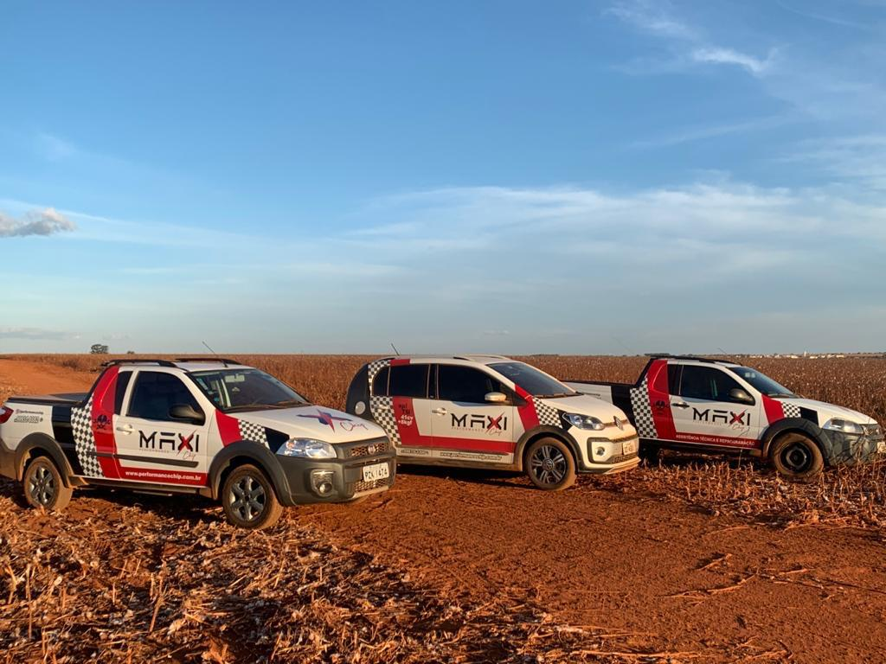
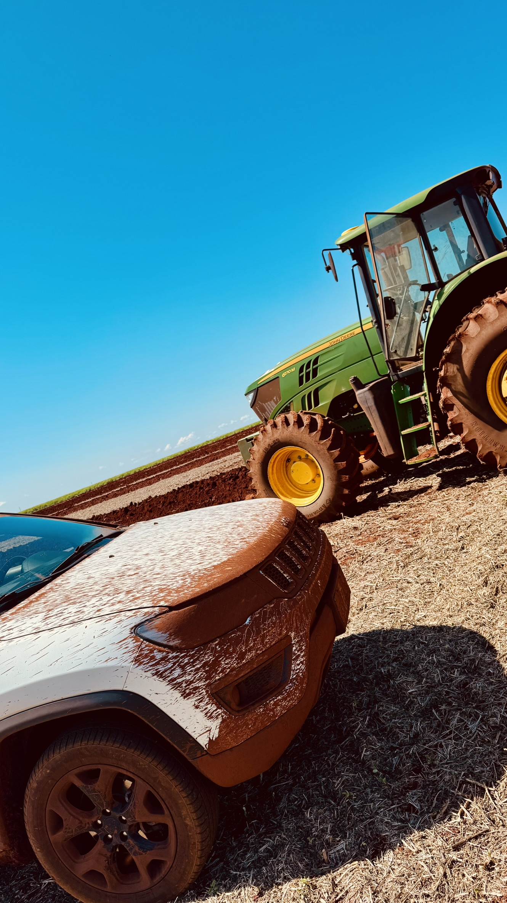
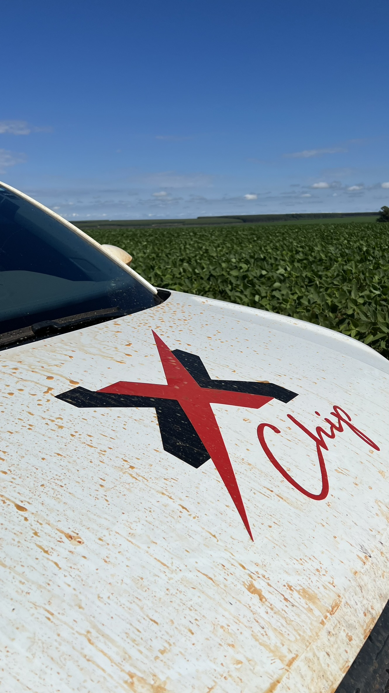
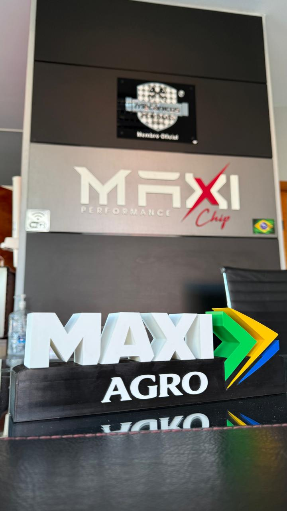
Marcas que a gente entende
Consulte exceções.
Tratores, colheitadeiras e pulverizadores das principais marcas do campo — todas com gestão eletrônica que a gente sabe ler e reprogramar.
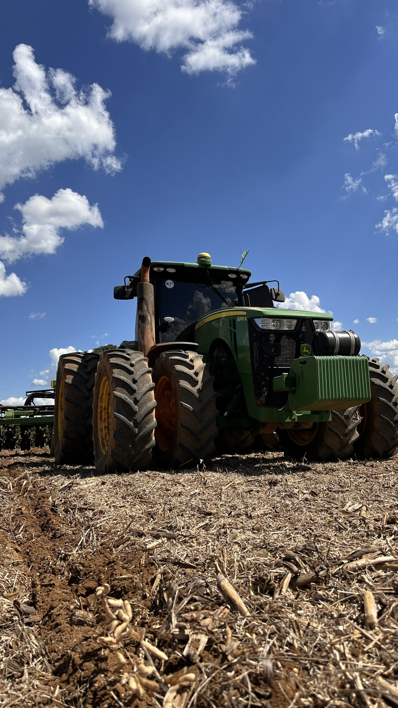
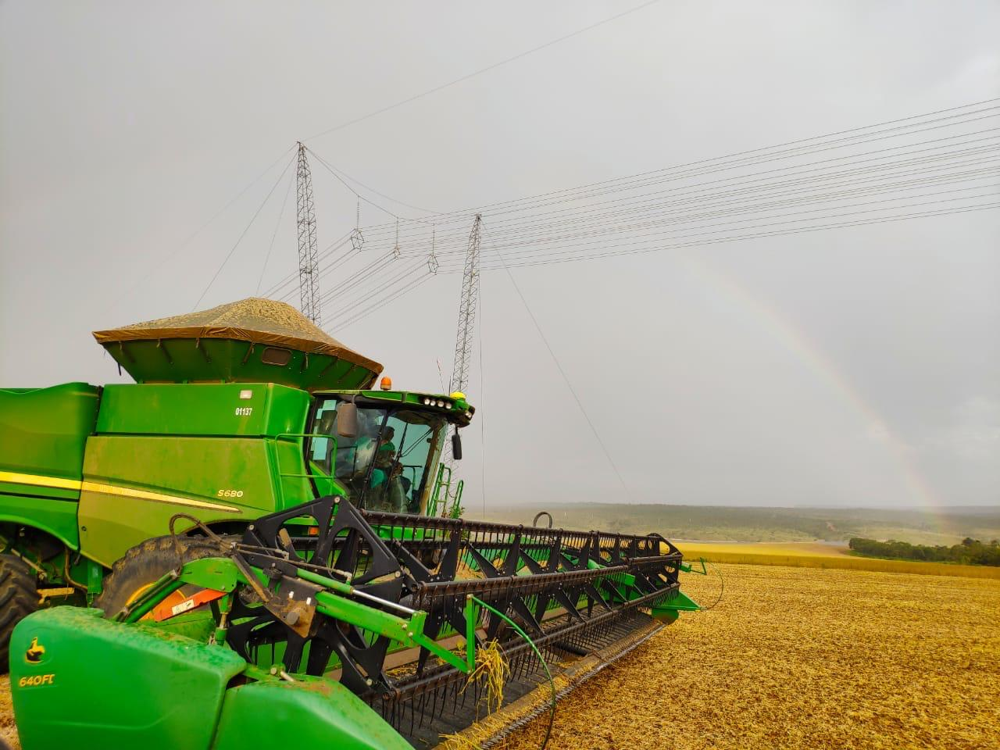
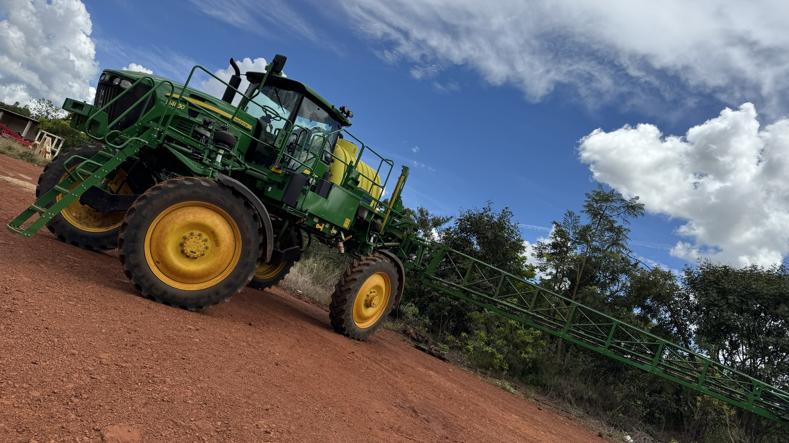
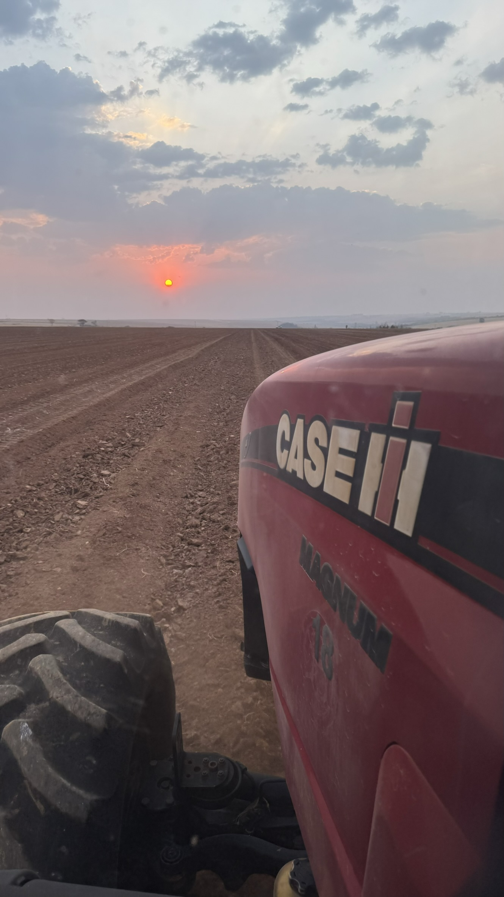
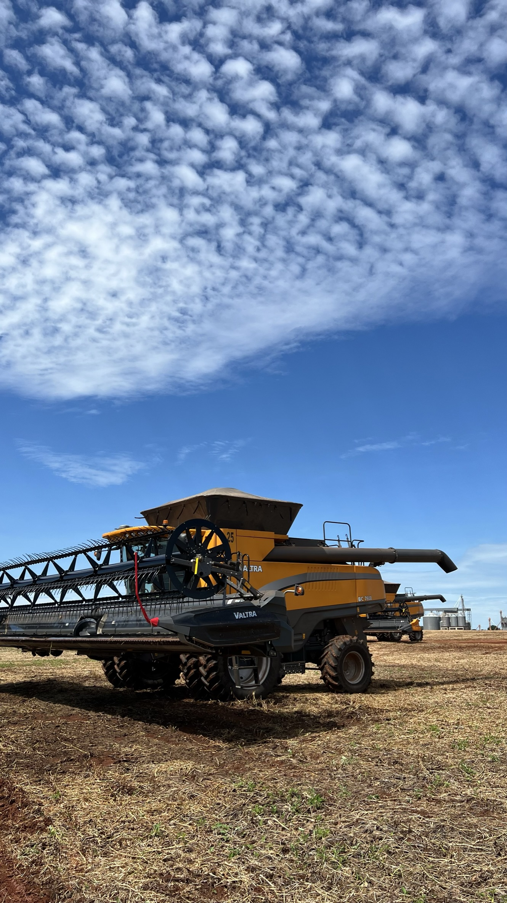
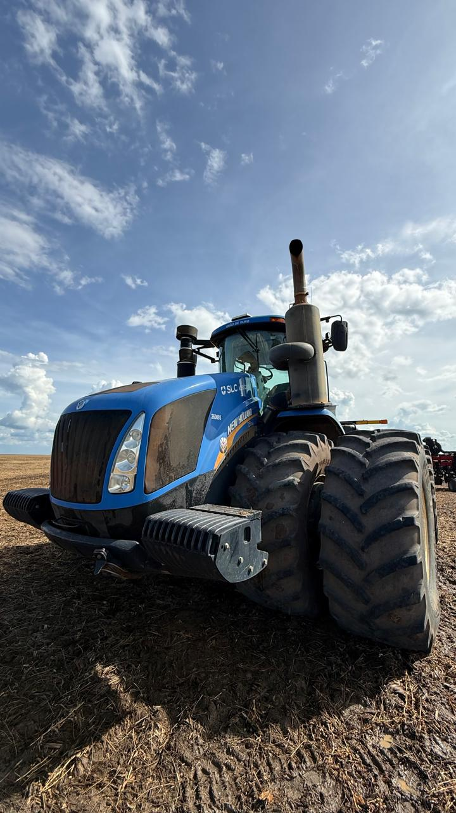
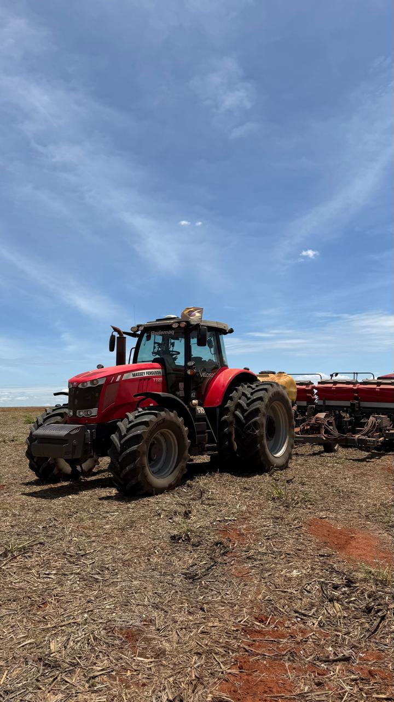
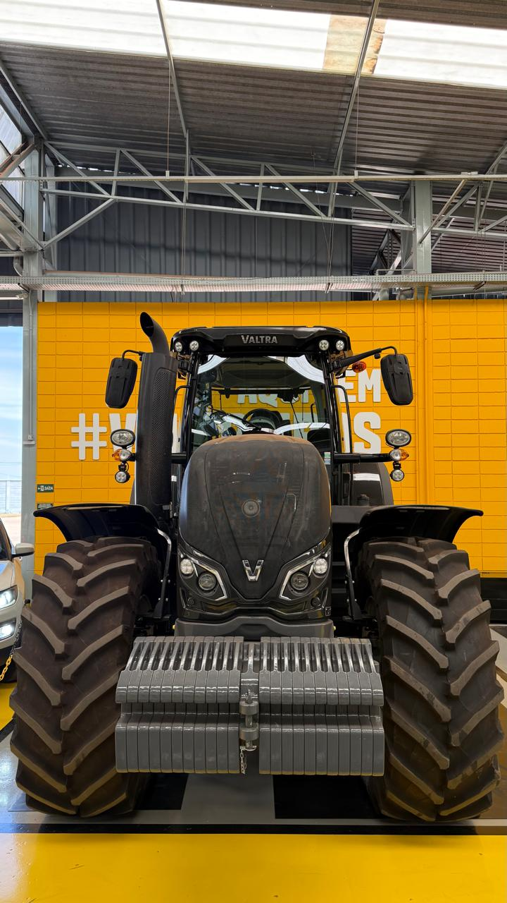
Marcas e modelos atendidos
Pense como empresário rural
Não é estimativa de catálogo. São números medidos no campo — na mesma máquina, antes e depois da reprogramação.
Mesma máquina, mesmo dia, a 7,5 km/h — os dois plantando na mesma velocidade. O original puxou plantadeira de 11 linhas (5,5 m); o reprogramado, de 16 linhas (8,0 m). É a reprogramação que dá motor para puxar a barra maior gastando menos diesel por hectare. Diesel a R$ 6,50/L.
≈ 76 h a menos de trator por 1.000 ha (242 h → 167 h, jornada de 10 h/dia). Caso real medido em campo; resultados variam conforme modelo, cultura, solo, operador e safra. Diesel de referência R$ 6,50/L.
Informe a área que você planta e veja, na hora, quanto de diesel e de dinheiro a reprogramação devolve para o seu caixa a cada safra.
Estimativa baseada no caso real do Puma 205 no plantio: economia de 1,68 L de diesel por hectare. O ganho real da sua frota a gente mede em campo, sem compromisso.
Tem dois jeitos da reprogramação devolver dinheiro para você. O Puma 205 acima mostrou o primeiro: produzir mais no mesmo tempo. Esse próximo mostra o segundo — gastar muito menos fazendo exatamente o mesmo.
Aqui a operação não mudou em nada — e foi de propósito: mesma plantadeira (18 linhas · 50 cm = 9,0 m), mesma velocidade (8 km/h), mesmo resultado no campo. A única diferença foi o trator parar de beber 12,6 litros de diesel por hora. Diesel a R$ 6,50/L.
Cálculo: área × 1,75 L/ha economizados — caso real Puma 205, plantadeira de 18 linhas (50 cm · 9,0 m) a 8 km/h (consumo de 34,3 → 21,7 L/h = 4,76 → 3,01 L/ha).
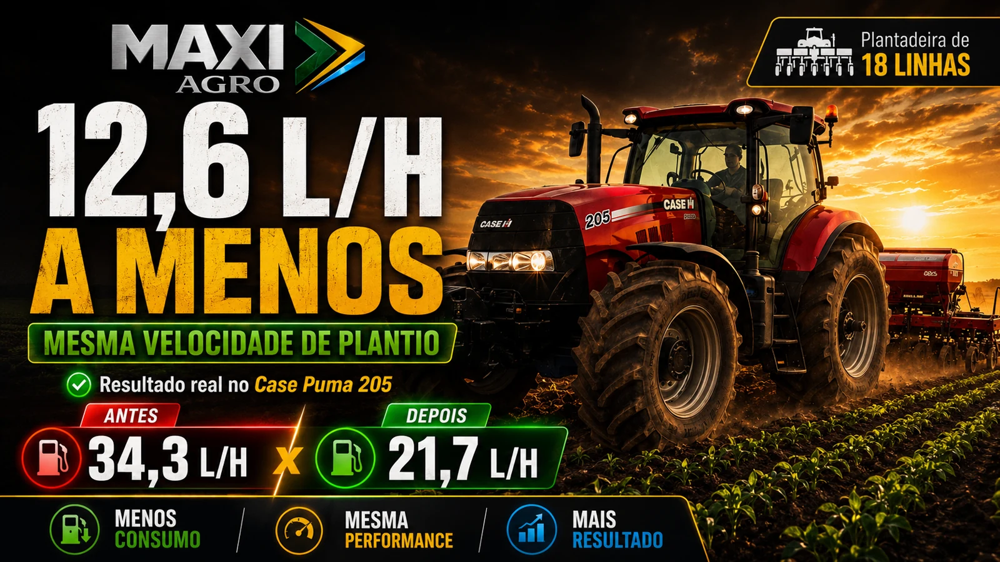
O pulverizador é a máquina que mais roda na safra. Enquanto o trator e a colheitadeira passam 1 vez na área, o pulverizador passa 5, 6, 7 vezes — dependendo da cultura. Por isso cada gota economizada por hectare vira muito dinheiro no fim do ciclo. Diesel a R$ 6,50/L.
Num caso real, foram 263 litros economizados em 20 dias — só nessa máquina, com o motor girando mais aliviado.
Cálculo: área × nº de passadas × 0,15 L/ha economizados por passada (caso real JD 4040M). Quanto mais a cultura exige pulverização, maior a economia acumulada na safra.
Antes, a 5 km/h, a colhedora já trabalhava no talo — 100% da reserva de torque consumida e 74 L/h de diesel. Depois da reprogramação, colhendo mais rápido (6 km/h), ela nem entra na reserva de torque — e o consumo caiu para menos de 64 L/h. Plataforma de 40 pés, diesel a R$ 6,50/L.
Colhendo 20% mais rápido, você fecha a colheita antes — e cada dia que sobra pode adiantar o plantio da 2ª safra. Informe sua realidade:
Base — depoimento real do operador (colhedora de soja JD S770, plataforma 40 pés): 5 → 6 km/h = +20% de produtividade (você fecha a colheita ~17% mais rápido) e consumo de 74 → 64 L/h (−10 L/h) — na plataforma de 40 pés, ~3,4 L de diesel economizados por hectare. E os dias que sobram podem antecipar a 2ª safra: uma ou duas chuvas a mais no ciclo viram mais produtividade na próxima lavoura. Veja o depoimento logo abaixo.
Quer saber quanto a SUA máquina deixa no campo? Fala com a Maxi Agro — a gente mede o ganho real da tua frota, sem compromisso.
"Tinha um John Deere que já não puxava igual. Fiz o remap na Maxi Agro antes do plantio e a diferença foi absurda — o trator voltou ao que era quando era novo. Não troquei a máquina, melhorei ela."
Quem já reprogramou
Depoimentos reais de clientes Maxi Agro. Ver mais no nosso canal →
Antes de você perguntar
Se a reprogramação é bem feita, definitivamente não. Sua máquina passa a trabalhar com sobra de motor: gira menos RPM para fazer o mesmo serviço, injeta menos diesel, sofre menos desgaste de bico e de peça. Menos esforço, mais economia, mais produtividade — e mais dinheiro no seu bolso.
Não assumimos a garantia da montadora — mas em 12+ anos nunca tivemos um problema de garantia, e hoje prestamos serviço para diversas concessionárias pelo Brasil. O risco pode existir um dia? Pode. Mas a economia que entra no seu caixa costuma fazer esse risco valer a pena — tem cliente que hoje até nos liga para saber qual máquina comprar.
Dá, 100% reversível. Tanto por nós quanto pela própria montadora, numa atualização de software da controladora. Você não fica preso a nada.
Perguntas frequentes
Em média, menos de 1 hora de máquina parada. Reprogramou, voltou para o campo no mesmo dia.
Não. Atendimento 100% na fazenda — ou onde a máquina estiver. Nós vamos até você.
O valor depende da necessidade e do tipo de software da sua máquina. Mas para você ter referência: temos casos com retorno do investimento em menos de 100 horas de trabalho da máquina.
De modo geral, praticamente toda máquina agrícola semi-eletrônica ou eletrônica pode ser reprogramada. Máquina com bomba injetora mecânica, não. Na dúvida, me chama com o modelo que eu confirmo na hora.
Nos casos reais medidos aqui da página: Case IH Puma 205 caiu de R$ 28,72 para R$ 18,38 por hectare no plantio, pulverizador foi de 0,78 para 0,63 L/ha e colheitadeira de 62 para 51 L/h. O resultado varia com a máquina, o implemento e a operação — por isso analisamos o seu caso antes e te dizemos exatamente o que dá para ganhar.
Chip externo, em máquina agrícola, faz uma coisa só: aumenta a injeção de combustível no rail (a linha que alimenta os bicos). Trator moderno exige um equilíbrio muito maior do que isso — por isso não trabalhamos com chip no agro. A reprogramação ajusta o software da própria controladora, sob medida para o seu modelo e a sua operação — e 100% reversível.
John Deere, Case IH, New Holland, Massey Ferguson, Valtra — e outras. A regra é simples: máquina semi-eletrônica ou eletrônica, dá para reprogramar. Manda o modelo no WhatsApp que eu confirmo na hora.
Cartão, PIX ou dinheiro. Faturamento/boleto, é só consultar com antecedência.
O próximo passo é simples
Fale com nosso técnico agora. Sem compromisso. Analisamos o modelo, a operação e te dizemos exatamente o que dá para ganhar.
Falar com técnico agoraResposta imediata · Triângulo Mineiro e Alto Paranaíba · Atende qualquer região
Performance Inteligente!